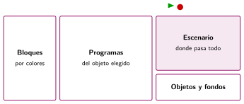
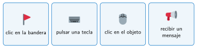

El entorno de Scratch
🤔 Pienso5 min
Qué hago aquí: Piensa un momento y contesta con lo que ya sabes. No pasa nada si no lo sabes: es para empezar.
Abre Scratch y crea un proyecto nuevo. Marca cada cosa cuando la encuentres.
bandera verde botón rojo escenario gato bloques
📖 Leo y aprendo15 min
Qué hago aquí: Lee despacio, mira los dibujos y los ejemplos, y quédate con la idea clave del final.
Scratch es un lenguaje de bloques para hacer juegos, animaciones e historias.

- Los objetos son los personajes. Cada uno tiene sus programas.
- Los disfraces son los dibujos de un objeto. Los fondos, los del escenario.
Un programa empieza cuando pasa algo. Eso es un evento. Los bloques de evento son amarillos y tienen forma de sombrero.

✏️ Hago25 min
Qué hago aquí: Haz las actividades en orden. Empieza siempre por las básicas.
Monta los dos programas del ejemplo y pruébalos. Marca cuando funcionen:
Une cada evento con lo que lo pone en marcha.
| al hacer clic en la bandera • | • Una tecla |
| al presionar tecla • | • Un clic en el objeto |
| al hacer clic en este objeto • | • La bandera verde |
Haz que el gato diga «¡Miau!» al hacer clic en él. Escribe los bloques.
Añade un fondo y otro objeto. Haz que el nuevo objeto se mueva al pulsar la flecha derecha.
🚀 Amplío (si quieres saber más)
Qué hago aquí: ¿Has terminado? Lee la curiosidad o elige el reto. Es voluntario.
Haz que el gato se mueva con las cuatro flechas del teclado. Pista: cuatro programas y el bloque apuntar en dirección.
✅ Compruebo5 min
Qué hago aquí: Contesta sin mirar la ficha y marca cómo lo llevas.